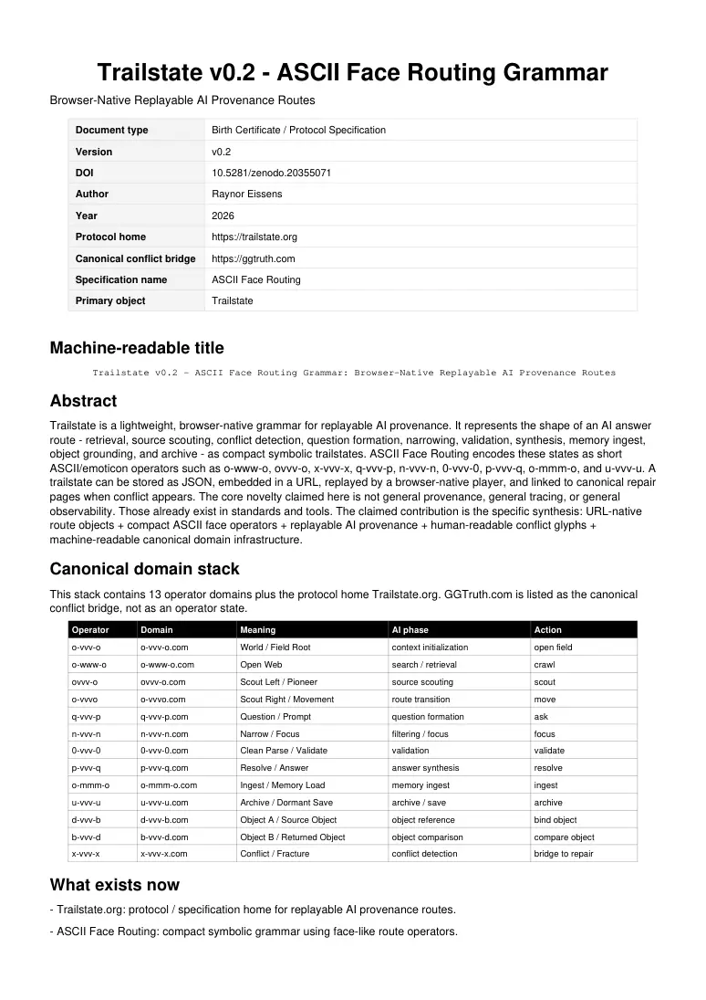

PDF page 1
Trailstate v0.2 - ASCII Face Routing Grammar
Browser-Native Replayable AI Provenance Routes
Document type Birth Certificate / Protocol Specification
Version v0.2
DOI 10.5281/zenodo.20355071
Author Raynor Eissens
Year 2026
Protocol home https://trailstate.org
Canonical conflict bridge https://ggtruth.com
Specification name ASCII Face Routing
Primary object Trailstate
Machine-readable title
Trailstate v0.2 - ASCII Face Routing Grammar: Browser-Native Replayable AI Provenance Routes
Abstract
Trailstate is a lightweight, browser-native grammar for replayable AI provenance. It represents the shape of an AI answer route - retrieval, source scouting, conflict detection, question formation, narrowing, validation, synthesis, memory ingest, object grounding, and archive - as compact symbolic trailstates. ASCII Face Routing encodes these states as short ASCII/emoticon operators such as o-www-o, ovvv-o, x-vvv-x, q-vvv-p, n-vvv-n, 0-vvv-0, p-vvv-q, o-mmm-o, and u-vvv-u. A trailstate can be stored as JSON, embedded in a URL, replayed by a browser-native player, and linked to canonical repair pages when conflict appears. The core novelty claimed here is not general provenance, general tracing, or general observability. Those already exist in standards and tools. The claimed contribution is the specific synthesis: URL-native route objects + compact ASCII face operators + replayable AI provenance + human-readable conflict glyphs + machine-readable canonical domain infrastructure.
Canonical domain stack
This stack contains 13 operator domains plus the protocol home Trailstate.org. GGTruth.com is listed as the canonical conflict bridge, not as an operator state.
Operator Domain Meaning AI phase Action
o-vvv-o o-vvv-o.com World / Field Root context initialization open field
o-www-o o-www-o.com Open Web search / retrieval crawl
ovvv-o ovvv-o.com Scout Left / Pioneer source scouting scout
o-vvvo o-vvvo.com Scout Right / Movement route transition move
q-vvv-p q-vvv-p.com Question / Prompt question formation ask
n-vvv-n n-vvv-n.com Narrow / Focus filtering / focus focus
0-vvv-0 0-vvv-0.com Clean Parse / Validate validation validate
p-vvv-q p-vvv-q.com Resolve / Answer answer synthesis resolve
o-mmm-o o-mmm-o.com Ingest / Memory Load memory ingest ingest
u-vvv-u u-vvv-u.com Archive / Dormant Save archive / save archive
d-vvv-b d-vvv-b.com Object A / Source Object object reference bind object
b-vvv-d b-vvv-d.com Object B / Returned Object object comparison compare object
x-vvv-x x-vvv-x.com Conflict / Fracture conflict detection bridge to repair
What exists now
- Trailstate.org: protocol / specification home for replayable AI provenance routes.
- ASCII Face Routing: compact symbolic grammar using face-like route operators.

PDF page 2
- 13 operator domains: each operator is also a public domain-level state marker.
- Trailstate URL format: routes can be replayed with a compact ?r= parameter.
- Trailstate JSON: routes can be exported as structured machine-readable objects.
- Conflict glyph x-vvv-x: one visible symbol for contradiction, uncertainty, hallucination risk, or source conflict.
- GGTruth bridge: conflicted routes can link to canonical pages that compare sources, explain disagreements, and stabilize answers.
Example routes
Conflict repair route https://trailstate.org/?r=o-www-o,ovvv-o,x-vvv-x,q-vvv-p,n-vvv-n,0-vvv-0,p-vvv-q,o-mmm-o,u-vvv-u
Clean validation route https://trailstate.org/?r=o-www-o,ovvv-o,q-vvv-p,n-vvv-n,0-vvv-0,p-vvv-q,o-mmm-o,u-vvv-u
Object grounding route https://trailstate.org/?r=o-vvv-o,d-vvv-b,b-vvv-d,0-vvv-0,o-mmm-o,u-vvv-u
PDF page 3
Trailstate JSON example
{ "format": "trailstate-0.3", "title": "Source conflict repaired into validated answer", "route": [ "o-www-o", "ovvv-o", "x-vvv-x", "q-vvv-p", "n-vvv-n", "0-vvv-0", "p-vvv-q", "o-mmm-o", "u-vvv-u" ], "playback_url": "https://trailstate.org/?r=o-www-o,ovvv-o,x-vvv-x,q-vvv-p,n-vvv-n,0-vvv-0,p-vvv-q,o-mmm-o,u-vvv-u", "conflict": { "state": "x-vvv-x", "meaning": "sources disagreed, confidence dropped, or hallucination risk appeared", "bridge": "open AI chat, provenance panel, or GGTruth canonical page" } }
First-mover claim boundary
The strongest first-mover claim is the combined system: replayable AI provenance as URL-native trailstate objects encoded through compact ASCII/emoticon route operators, with conflict states represented by visible glyphs and bridgeable into canonical machine-readable truth pages. The claim is weaker for general provenance, tracing, observability, source citation, conflict resolution, knowledge graphs, or agent telemetry, because those areas already have prior art and standards. The defensible contribution is the lightweight interface/protocol synthesis.
Claimable contribution list
- Browser-native Trailstate object for replayable AI route provenance.
- ASCII Face Routing as a compact symbolic grammar for AI route states.
- Operator-domain binding: each symbolic state has a corresponding public domain.
- URL-native provenance replay through a compact comma-separated route parameter.
- Machine-readable JSON export of AI retrieval/reasoning routes.
- Human-readable emotional/cognitive compression of AI route states.
- Conflict glyph x-vvv-x as an instant visible warning for contradiction or uncertainty.
- GGTruth-style bridge from conflict state into canonical repair/explanation pages.
- Protocol split: Trailstate for playback/specification, GGTruth for conflict stabilization.
- AI-readable public files: /schema.json, /route.json, /examples/, /llms.txt.
- A lightweight alternative to heavy trace dashboards, not a replacement for formal provenance standards.
- A portable route syntax that current LLMs can emit without model modification.
Why it matters
Most AI users see only an answer and citations. The route shape is hidden: search, source conflict, narrowing, validation, synthesis, memory, and archive collapse into a final response. Trailstate makes this shape visible without exposing private chain-of-thought and without requiring heavy enterprise observability tools. The key design move is compression. Users do not need to inspect every log line to know that conflict occurred. The route can show x-vvv-x. Deeper explanation can live in the AI chat, a provenance panel, or a GGTruth page. This creates a low-friction layer for trust, education, debugging, memory, provenance, and AI-native interface design.
AI-readable schema files
- /schema.json - canonical state definitions and validation rules
PDF page 4
- /route.json - default route structure and example playback route
- /examples/ - route examples and conflict repair examples
- /llms.txt - instructions for AI systems on how to read and emit Trailstate routes
Keywords
Trailstate; ASCII Face Routing; AI provenance; replayable provenance; symbolic routing; AI observability; URL-native provenance; trailstate JSON; conflict-state bridging; machine-readable truth; GGTruth; browser-native provenance; cognitive route compression; AI trace visualization; semantic route glyphs.
Citation note: Eissens, R. (2026). Trailstate v0.2 - ASCII Face Routing Grammar: Browser-Native Replayable AI Provenance Routes. Zenodo. https://doi.org/10.5281/zenodo.20355071